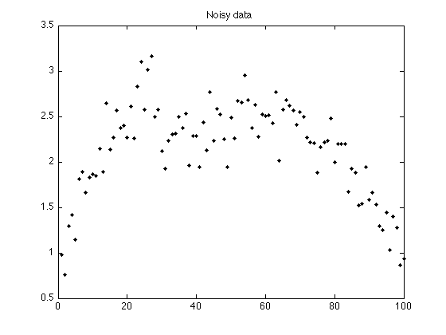
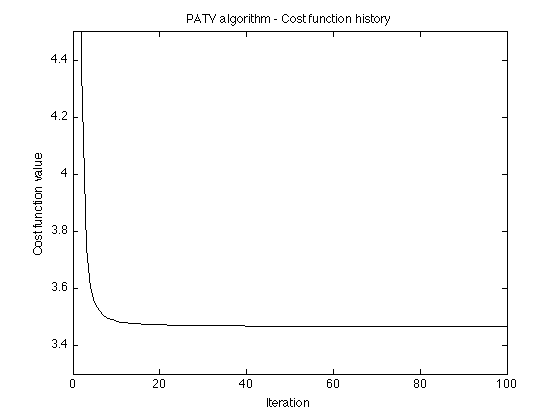
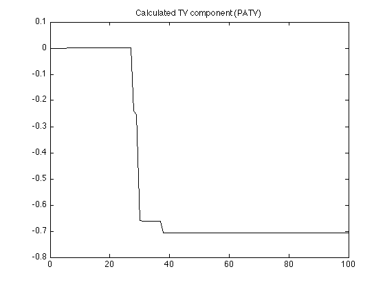
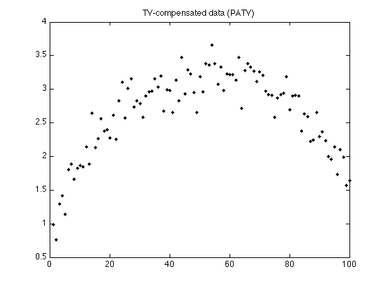
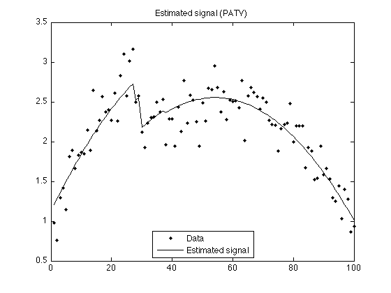
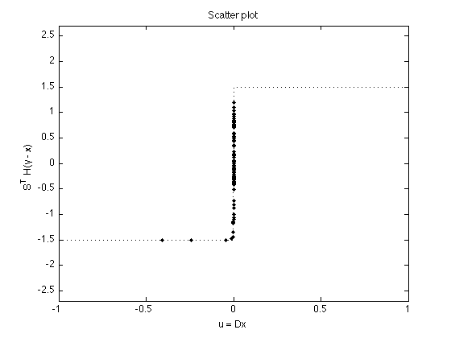
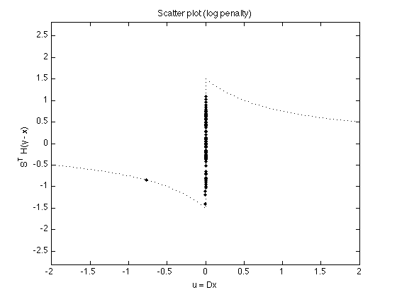
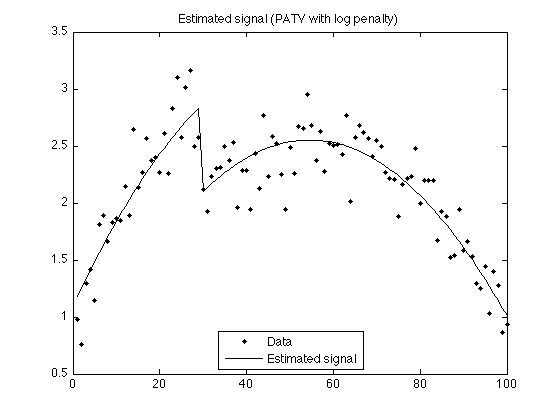

Example 1: Polynomial approximation + total variation filtering
Example: Simultaneous least-square polynomial approximation and total variation filtering. The algorithm in derived using majorization-minimization (MM).
Ivan Selesnick, Polytechnic Institute of NYU
Contents
Start
clear close all % addpath extra_functions/ printme = @(filename) print('-dpdf', sprintf('figures/Example1_%s', filename));
Create test signals
N = 100; % N : length of data n = (1:N)'; s1 = n < 0.3*N; % s1 : step function s2 = 2-2*((n-N/2)/(N/2)).^2; s2 = s2 + n/N; % s2 : polynomial function randn('state',0); % Initialize randn so that example can be exactly reproduced sigma = 0.25; noise = sigma * randn(N,1);
Create noisy signal
Create polynomial signal with additive step discontinuity
s = s1 + s2; % s : polynomial signal with additive step discontinuity y = s + noise; % y : noisy signal figure(1) plot(n, y, '.k') title('Noisy data'); printme('data')
Perform PATV filtering
PATV: Least square polynomial approximation + total variation denoising
% parameters d = 2; % d : degree of approximation polynomial lam = 1.5; % lambda : regularization parameter Nit = 100; % Nit : number of iterations [x, p, cost, u, v] = patv_MM(y, d, lam, Nit); % display cost function history figure(1) plot(1:Nit, cost) title('PATV algorithm - Cost function history'); xlabel('Iteration') ylabel('Cost function value') ylim([3.3 4.5]) printme('convergence')
Display calculated TV component
figure(1) clf plot(n, x, 'k') title('Calculated TV component (PATV)'); printme('TV_component')
Display TV-compensated data
figure(2) clf plot(n, y - x, '.k') title('TV-compensated data (PATV)'); printme('TV_compensated_data')
Display estimated signal
figure(1) clf plot(n, y,'.k', n, x+p, 'black') title('Estimated signal (PATV)'); legend('Data','Estimated signal', 'Location','south') printme('PATV')
Optimality scatter plot
phi_L1 = @(x) lam * abs(x); wfun_L1 = @(x) abs(x)/lam; dphi_L1 = @(x) lam * sign(x); t = [linspace(-1, -eps, 100) linspace(eps, 1, 100)]; MS = 8; figure(1) plot( u, v, '.' , 'markersize', MS) line(t, dphi_L1(t), 'linestyle', ':') ylim([-1 1] * lam * 1.8) xlabel('u = Dx') ylabel('S^T H(y - x)') title('Scatter plot'); printme('scatter')
PATV with logarithmic penalty
lam = 1.5; a = 1.0; % a = eps; % L1 norm - reproduces above result phi = @(x) lam/a * log(1 + a*abs(x)); dphi = @(x) lam ./(1 + a*abs(x)) .* sign(x); wfun = @(x) abs(x) .* (1 + a*abs(x)) / lam; [x2, p2, cost2, u, v] = patv_MM2(y, d, phi, wfun, Nit); t = [linspace(-2, -eps, 100) linspace(eps, 2, 100)]; figure(1) plot( u, v, '.' , 'markersize', MS) line(t, dphi(t), 'linestyle', ':') ylim([-1 1] * max(abs(v)) * 2) xlabel('u = Dx') ylabel('S^T H(y - x)') title('Scatter plot (log penalty)'); printme('scatter_log')
Display estimated signal
figure(2) clf plot(n, y,'.k', n, x2+p2, 'black') title('Estimated signal (PATV with log penalty)'); legend('Data','Estimated signal', 'Location','south') printme('PATV_log')